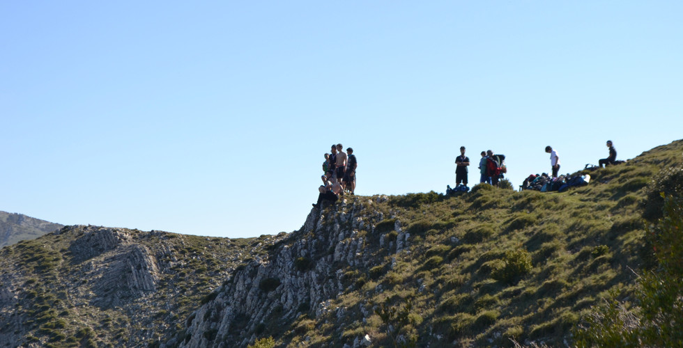
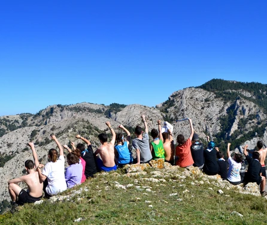
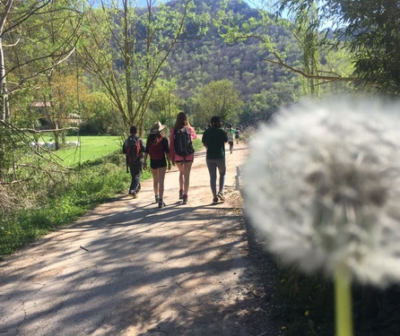
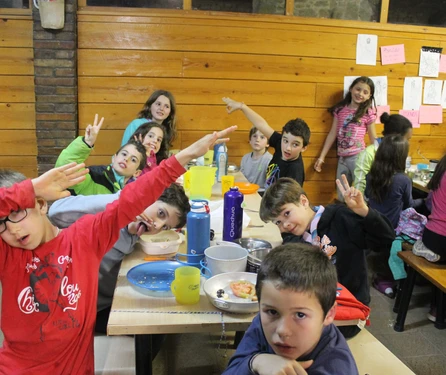
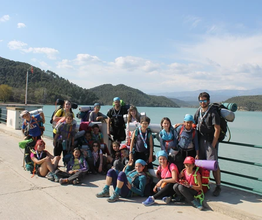
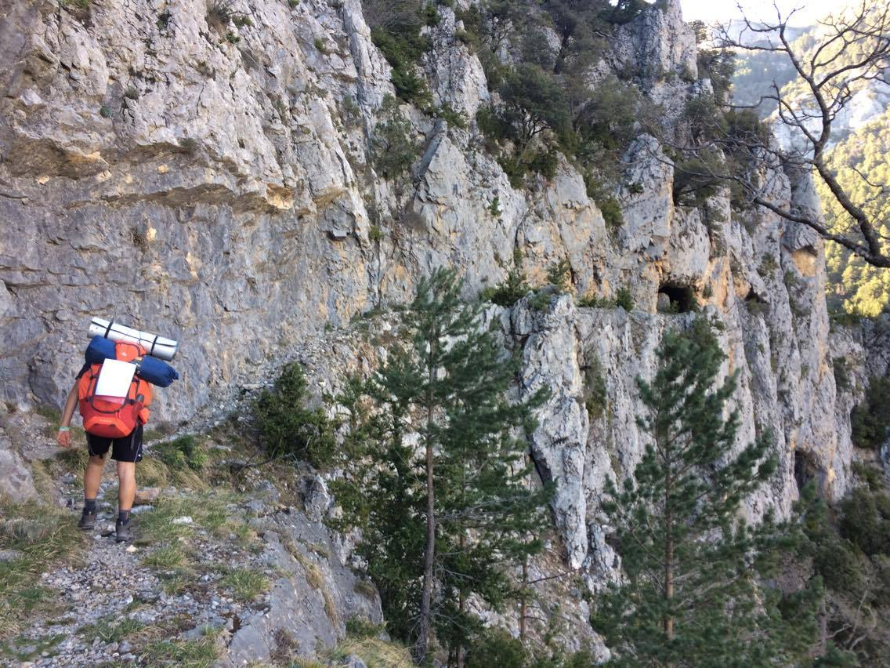
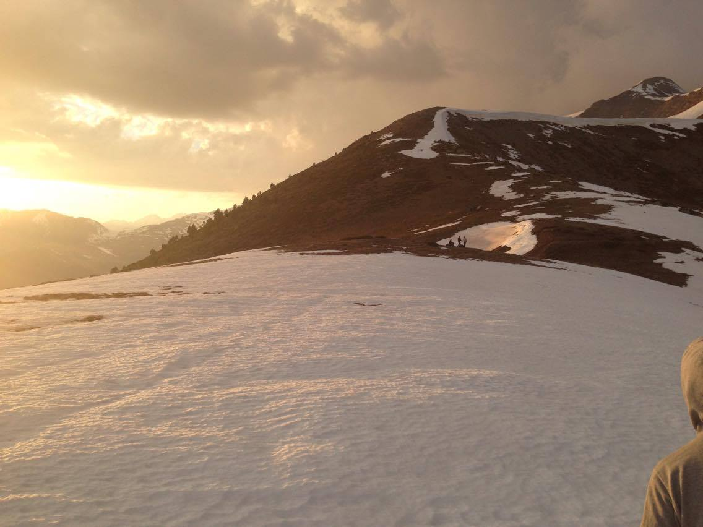
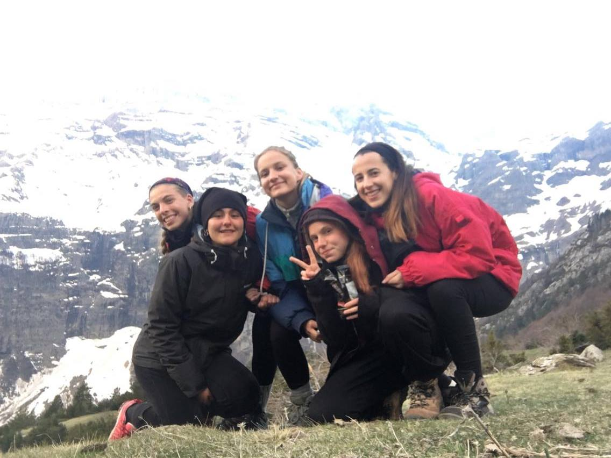

SETMANA SANTA!
28 de maig de 2026
Hooooola! S'ha tardat, però així us hem fet la boca aigua... ja tenim aquí el Post de Setmana Santa! Què va fer cada unitat durant els campaments / colònies de Primavera d'aquest 2017?
Estol i Llops vam anar a una casa de colònies a Solsona. Llops va fer una petita ruta, dormint a fora la primera nit, i després es van unir als Estols per descobrir la resta de l'ambientació. Resulta que uns malvats havien robat els amulets a Cocademon, i la tasca dels estols i llops era ajudar als déus a recuperar les seves forces. Si no ho feien, el món podria acabar! Us deixem al final del post un link on podreu veure les fotos de la setmana! Els estols ens van preparar un curtmentratge mut per explicar-nos algunes de les coses que van passar (Perill!!!! molt adorable, pot produir mal de panxa de riure).
Raiers van anar al Cau Rock, de la mà d'uns professors de música molt... diferents per dir-ho d'alguna manera :). Preferim no explicar-vos gaire més, els vídeos valen més que mil paraules. (Mireu el de la presentació per riure una estona! Links a baix de tot també).
Secció vam fer una ruta a Horta de Sant Joan, patrocinada pel famós programa de televisió "Esta hermandad era una ruina!". Els presentadors del programa van guiar la unitat durant 5 dies perquè aquesta s'enfortís, i pogués així assumir els reptes que els esperen aquest tercer trimestre!
Klan van fer un raid genial per fora de Catalunya (no en tenim vídeo de moment).
Vídeos de Raiers
Video de Estol
FOTOS







